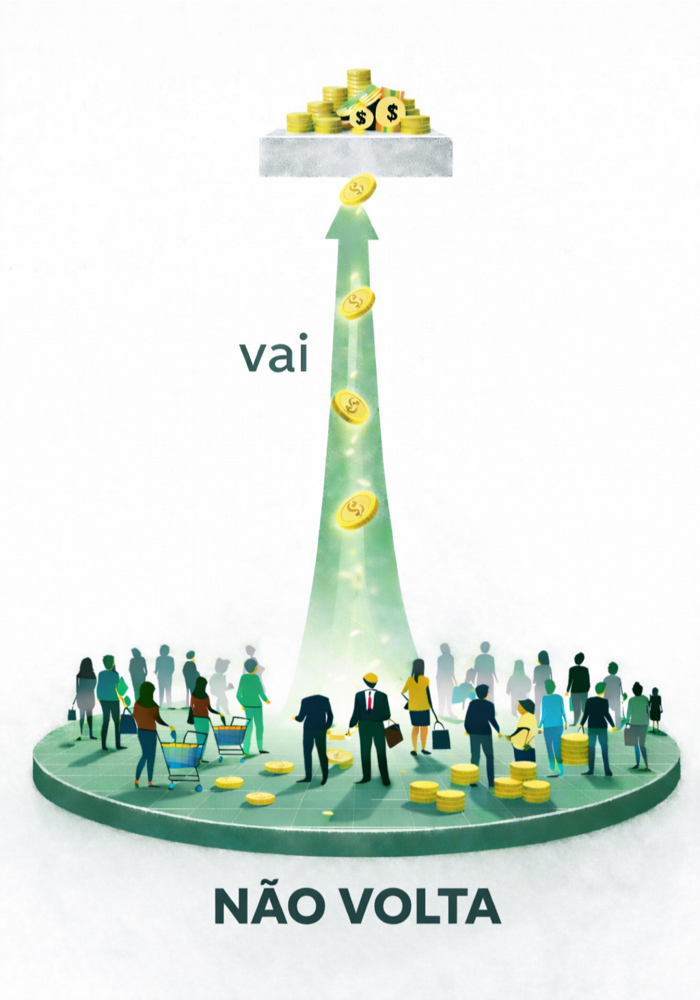

O país funciona por causa de gente como você.
Quem faz o país funcionar?
Quem trabalha.
Quem produz.
Quem consome.
Sem essa base,
o país não funciona.
Mas algo não fecha.
Você sustenta tudo.
Mas não decide.
O retorno
não vem na mesma medida.
Existe uma estrutura.
No topo, decisões.
No meio, governo.
Na base, quem sustenta tudo.
O terceiro nível
sustenta o país.
Você está na base.
Você sustenta o país.
Você é essencial.
Mas isso não se reflete
na prática.
💰 O caminho do dinheiro
como ele sai e não volta
E agora?
Se você chegou até aqui,
já percebeu o padrão.
A base sustenta.
Mas nem sempre é o foco
das decisões.
Então não é só sobre entender.
É sobre começar
a observar.
Quem toma decisões
que afetam a base?
Essas decisões favorecem
quem sustenta?
Ou não?
O que é priorizado?
Para onde vai o dinheiro?
O que fica de lado?
Quem controla o orçamento
decide para quem
o país funciona.
🗳️ O caminho das decisões
Decisões não acontecem sozinhas.
Elas são tomadas por pessoas.
Que ocupam posições de poder.
Essas posições podem ser ocupadas.
Principalmente pelo voto.
No fim, existe uma disputa.
A disputa é o destino do dinheiro.
Para onde ele vai.
Pode ir para a base.
Ou pode se concentrar no topo.
O orçamento mostra para quem o país funciona.
A escolha importa.
Isso fez sentido pra você?
Você vê isso acontecendo no seu dia a dia?
enviar →
Mostra isso pra mais alguém.
Olha isso aqui:
terceironivel.org
enviar no WhatsApp →
Você já parou pra pensar nisso?
terceironivel.org
enviar no WhatsApp →
Isso aqui me fez pensar.
terceironivel.org
enviar no WhatsApp →
Isso não termina aqui.
Novos conteúdos vão sendo incluídos.
Se quiser acompanhar:
quero acompanhar →
Quando você entende isso,
começa a perceber alguns padrões.
Como o caminho do dinheiro.
Uma parte importante do que sai da base
não volta da mesma forma.

Por que o dinheiro que sai da base e vai para o topo?
Existe um caminho que transfere
parte dos nossos impostos
para bancos e grandes investidores. A DÍVIDA PÚBLICA.
Como isso começou
Tudo começou depois de uma palestra sobre a dívida pública.
O que eu entendi ali me incomodou.
Parecia que uma parte enorme do dinheiro público ia para o sistema financeiro —
para pagar juros da dívida
— enquanto faltava para saúde e educação.
A diferença era grande demais.
Eu nunca tinha ouvido falar sobre aquilo.
Era complexo.
Mesmo assim, eu comecei a estudar
e a buscar um jeito de explicar.
Foi assim que esse projeto começou.
vem comigo ↓
Primeiro de tudo:
o que é a dívida pública?
É quando o governo pega dinheiro emprestado
para investir no país.
Funciona assim:
recebe o dinheiro
e entrega títulos públicos.
Depois, devolve com juros.
Até aqui, nada de errado.
O problema começa quando o dinheiro deixa de ir para investimento…
e passa a ser usado para pagar dívida que já venceu.
Ou seja:
o governo faz dívida nova
pra pagar dívida velha.
A cada novo empréstimo, mais juros.
E começa um ciclo.
A dívida nunca termina.
Vai sendo paga… com mais dívida.
Veja o gráfico:
segue ↓
Veja um exemplo:
Orçamento federal executado (pago) 2025
Fonte: Auditoria Cidadã da Dívida
segue ↓
R$ 2,135 trilhões.
É difícil imaginar
o tamanho disso.
Se você contasse
1 número por segundo…
levaria mais de
67 mil anos.
Esse é o tamanho
do que estamos falando.
segue ↓
Uma parte cada vez maior do dinheiro do país vai para a dívida.
E falta para o resto:
saúde
educação
infraestrutura
É aí que o país trava.
O dinheiro sai da base,
passa pelo governo
e vai parar no topo.
E não volta.
Existe uma proposta de auditoria dessa dívida.
Está prevista na Constituição.
Mas nunca foi feita de verdade.
Sem pressão,
não acontece.
Enquanto isso,
o dinheiro continua sendo drenado
e a gente continua sentindo a falta.
A dívida pública, por si só, não é o problema.
O problema é como ela vem sendo usada.
Porque, desse jeito,
ela acaba concentrando cada vez mais o dinheiro no topo.
E quanto mais concentra,
menos sobra pra base.
As consequências estão aí.
Você vê no dia a dia.
Isso não acontece de um jeito só.
Acontece de várias formas,
em diferentes partes da estrutura.
Você pode continuar por outros caminhos:
💰 O caminho do dinheiro
como ele sai e não volta
🗳️ O caminho das decisões
quem decide e como
🏛️ O funcionamento por dentro
como a estrutura organiza tudo
Mostra isso pra mais alguém
Escolha uma mensagem e envie:
Olha isso aqui:
terceironivel.org
enviar no WhatsApp →
Você já parou pra pensar nisso?
terceironivel.org
enviar no WhatsApp →
Isso aqui me fez pensar.
terceironivel.org
enviar no WhatsApp →